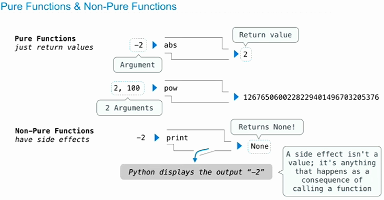
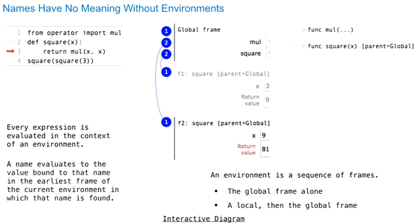

Notes for course UC Berkeley CS61A (2015 spring)
Table of Contents
1 Lecture 1
1.1 What is this course about ?
- A course about managing complexity
- Mastering abstraction
- Programming paradigms
- Not just about 0's and 1's
- An introduction to Python
- Full understanding of language fundamentals
- Learning through implementation
- How computers interpret programming languages
1.2 Alternatives to this course
CS 61AS : Self-Paced CS 61A, using scheme.
CS 10 : The Beauty and Joy of Computing.
1.3 Expression
Evaluation procedure for call expressions:
- Evaluate the operator and then the operand subexpressions
- Apply the function that is the value of the operator subexpression to the arguments that are the values of the operand subexpression
2 Lecture 2
2.1 Names, Assignment, and User-Defined Functions
buildin names are stored in modules
the operator module contains names for the functions that do the same thing as the built-in symbols as the '+' and '-'.
radius = 10
def circ():
return 2 * pi * radius
circ()
radius = 20
circ()
这个例子是否说明的是函数实现惰性求值。
2.2 Types of Expressions
- Primitive expressions:
- Number or Numeral (2)
- Name (add )
- String ('hello')
- Call expressions: operator(operand, operand, …)
An operand can also be a call expression.
2.3 Environment diagrams
Environment diagrams visualize the interpreter's process
http://www.pythontutor.com/composingprograms.html#mode=display
- Execution rule for assignment statements:
- Evaluate all expressions to the right of = from left to right
- Bind all names to the left of = to those resulting values in the current frame.
2.4 Defining functions
Assignment is a simple means of abstraction: binds names to values
Function definition is a more powerful means of abstraction: binds names to expressions
def <name>(<formal parameters>):
return <return expression>
Everything on the first line after "def" is the function signature.
Function body defines the computation performed when the function is applied.
Execution procedure for def statements:
- Create a function with signature <name>(<formal parameters>)
- Set the body of that function to be everything indented after the first line
- Bind <name> to that function in the current frame
2.5 Calling user defined function
Procedure for calling/applying user-defined functions (version 1):
- Add a local frame, forming a new environment
- Bind the function's formal parameters to its arguments in that frame
- Execute the body of the function in that new environment
Example:

A function's signature has all the information needed to create a local frame
2.6 Looking up Names in Environments
Every expression is evaluated in the context of an environment.
So far, the current environment is either:
- The global frame alone or
- A local frame, followed by the global frame.
from Two important things:
- An environment is a sequence of frames
- A name evaluates to the value bound to that name in the earliest frame of the current environment in which that name is found.
Built-in names like "max" are in the global frame too.
2.7 Print and None
A special value called "None", it means "nothing".
A function that does not explicitly return a value will return None.
Careful: None is not displayed by the interpreter as the value of an expression. This means when typed "None" in REPL, noting showed up.
- Pure Functions: just return values
- Non-pure functions: have side effects

3 Lecture 3
3.1 Multiple Environments
3.1.1 Life Cycle of a User-defined function
Def statement:
- A new function is created
- Name bound to that function in the current frame
Call expression:
square(2+2)
square is a name, what is also called an operator, and it evaluates to a user-defined function.
The operand is an expression, which is evaluated to number 4
- When call, operator & operands are evaluated
- Then Function (value of operator) called on arguments (values of operands)
Calling/Applying:
- A new frame is created (a new place where you can bind names to values)
- Parameters bound to arguments
- Body is executed in that new environment
- A value is returned.
Assignment and Def statement all change the current frame
An environment is a sequence of frames. So far we have environments that are two frames long at a maximum.
- The global frame alone
- A local, then the global frame
Every expression is evaluated in the context of an environment.
A name evaluates to the value bound to that name in the earliest frame of the current environment in which the name is found.

A call expressions and the body of the function being called are evaluated in different environments.
3.1.2 Local Names (1.3.4 of book)
The scope of a local name is limited to the body of the user-defined function that defines it. When a name is no longer accessible, it is out of scope. This scoping behavior isn't a new fact about our model; it is a consequence of the way environments work.
3.1.3 Local Assignment (1.5.3 of book) important
The effect of an assignment statement is to bind a name to a value in the first frame of the current environment. As a consequence, assignment statements within a function body cannot affect the global frame.
The fact that functions can only manipulate their local environment is critial to creating modular programs.
3.2 Miscellaneous Python Features
print 函数可通过 sep 指定间隔字符，默认是 ' '，使用 '' 可去除
间隔。
Run in interative mode:
python -i ex.py
Run doctest:
python -m doctest ex.py
Run doctest with detailed information shown:
python -m doctest -v ex.py
使用 help(...) 查看 docstring
3.3 Conditional statement
A statement is executed by the interpreter to perform an action, which is a bit different than the expression which evaluates to a value. So statement does something and expression evaluates to a value.
[From book 1.5] Control statements differ fundamentally from the expressions that we have studied so far. They deviate from the strict evaluation of subexpressions from left to right, and get their name from the fact that they control what the interpreter should do next, possibly based on the values of expressions.
In Python, 0, None and boolean value False are false values, all
other numbers are true values.
Functions that perform tests and return boolean values typically begin with is, not followed by an underscore.
4 Lecture 5
def make_adder(n):
def adder(k):
return k + n
return adder
add_three = make_adder(3)
result = add_three(4)
The parent of function add_three is f1 (frame of make_adder), not Global.
Data is part of the function.
- Every user-defined function has a parent frame (often global)
- The parent of a function is the frame in which it was defined
- Every local frame has a parent frame (often global)
- The parent of a frame is the parent of the function called.

lambda expression must be a single expression.
5 Homeworks
5.1 Using the ok program
The ok program helps you test your code and track your progress. The first time you run the autograder, you will be asked to log in with your @berkeley.edu account using your web browser. Please do so. Each time you run ok, it will back up your work and progress on our servers. You can run all the doctests with the following command:
python3 ok
To test a specific question, use the -q option with the name of the function:
python3 ok -q <function>
By default, only tests that fail will appear. If you want to see how you did on all tests, you can use the -v option:
python3 ok -v
If you do not want to send your progress to our server or you have any problems logging in, add the –local flag to block all communication:
python3 ok --local
When you are ready to submit, run ok with the –submit option:
python3 ok --submit
每次使用 python3 ok --local 对 homework 进行测试，使用 -q 来对具体
的问题进行测试。